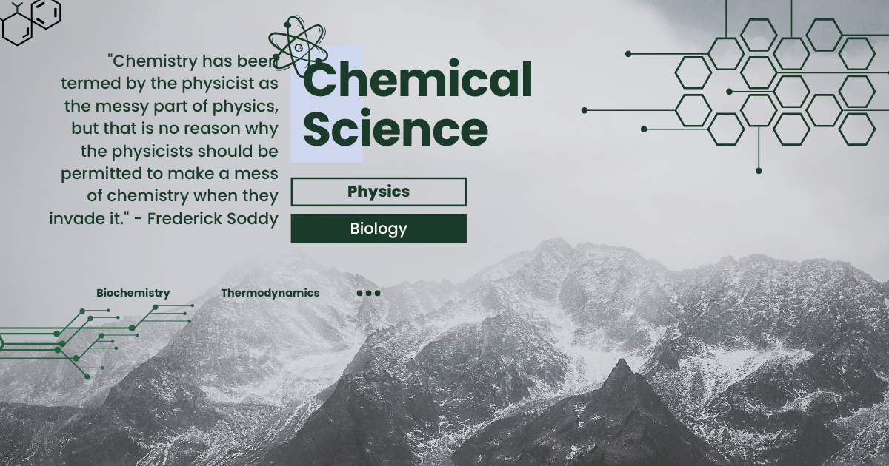

Kimia Pestisida
Kimia Pestisida: Mengkaji Senyawa Pengendali Hama untuk Pertanian Berkelanjutan
Ketahanan pangan sangat bergantung pada kemampuan manusia dalam mengendalikan hama dan penyakit tanaman. Dalam major studi Kimia, mata kuliah Kimia Pestisida menjadi bidang penting yang mempelajari senyawa kimia yang digunakan untuk melindungi tanaman dari organisme pengganggu.
Mata kuliah ini tidak hanya membahas efektivitas pestisida, tetapi juga aspek keamanan, dampak lingkungan, dan pengembangan alternatif yang lebih ramah lingkungan.
Apa Itu Kimia Pestisida?
Kimia Pestisida adalah cabang ilmu kimia yang mempelajari struktur, sifat, sintesis, mekanisme kerja, serta dampak dari senyawa yang digunakan untuk mengendalikan hama, gulma, dan penyakit tanaman. Pestisida meliputi insektisida, herbisida, fungisida, dan rodentisida.
Bidang ini juga mengkaji bagaimana senyawa tersebut berinteraksi dengan organisme target serta lingkungan sekitarnya.
Ruang Lingkup Kimia Pestisida
Mata kuliah ini mencakup berbagai aspek penting terkait pestisida, antara lain:
- Klasifikasi pestisida berdasarkan fungsi dan struktur kimia.
- Mekanisme kerja pestisida terhadap organisme target.
- Sintesis dan formulasi pestisida.
- Degradasi dan residu pestisida di lingkungan.
- Analisis pestisida dalam tanah, air, dan produk pangan.
Mahasiswa juga mempelajari aspek regulasi dan keamanan penggunaan pestisida.
Peran dalam Studi Kimia
Dalam konteks Kimia, Kimia Pestisida merupakan aplikasi dari kimia organik, kimia analitik, dan kimia lingkungan. Mata kuliah ini membantu mahasiswa memahami bagaimana senyawa kimia dirancang untuk fungsi tertentu sekaligus mempertimbangkan dampaknya.
Bidang ini juga penting dalam pengembangan teknologi pertanian modern yang efisien dan berkelanjutan.
Manfaat dalam Masyarakat, Riset, dan Dunia Kerja
Kimia Pestisida memiliki manfaat luas dalam berbagai bidang:
- Dalam masyarakat: membantu meningkatkan hasil pertanian dan ketahanan pangan.
- Dalam riset: digunakan untuk mengembangkan pestisida yang lebih efektif dan aman.
- Dalam dunia kerja: membuka peluang di industri agro, lingkungan, dan penelitian.
Keilmuan ini juga berperan dalam pengawasan residu pestisida untuk menjaga keamanan pangan.
Tren Terkini dalam Kimia Pestisida
Perkembangan bidang ini semakin fokus pada keberlanjutan, di antaranya:
- Biopestisida berbasis bahan alami dan mikroorganisme.
- Green chemistry dalam sintesis pestisida ramah lingkungan.
- Pengurangan residu untuk meningkatkan keamanan pangan.
- Precision agriculture untuk penggunaan pestisida yang lebih efisien.
Selain itu, penggunaan teknologi digital dan sensor juga membantu dalam pengendalian hama secara lebih tepat dan efektif.
Penutup
Kimia Pestisida merupakan mata kuliah penting dalam studi Kimia yang memberikan pemahaman tentang peran senyawa kimia dalam pertanian. Dengan pendekatan ilmiah dan berkelanjutan, bidang ini membantu menciptakan solusi untuk meningkatkan produksi pangan sekaligus menjaga lingkungan.
Di era modern, Kimia Pestisida menjadi semakin relevan dalam mendukung pertanian yang aman, efisien, dan berkelanjutan.
Mahasiswa Sabi
©Repository Muhammad Surya Putra Fadillah